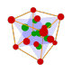

A-Lab / AlabOS
AlabOS: A Python-based Reconfigurable Workflow Management Framework for Autonomous Laboratories
Home / Scientific Domains / Chemistry & Materials

AlabOS: A Python-based Reconfigurable Workflow Management Framework for Autonomous Laboratories
Scaling deep learning for materials discovery
a generative model for inorganic materials design
A Deep Learning Atomistic Model Across Elements, Temperatures and Pressures
An orchestration software to democratize autonomous discovery
An orchestration architecture for chemical self-driving laboratories
Large Language Model-empowered Agent for Reaction Condition Recommendation in Chemical Synthesis
Heuristic Search over a Large Language Model's Knowledge Space using Quantum-Chemical Feedback
Chemistry Agent Connecting Tool-Usage to Science
Unleashing the Power of Large Language Models in Organic Synthesis
autonomous discovery and optimization of multi-step chemistry using a self-driven fluidic lab guided by reinforcement learning
Automated self-optimization, intensification, and scale-up of photocatalysis in flow
An automatic end-to-end chemical synthesis development platform powered by large language models
A mobile robotic chemist
A Multiagent-Driven Robotic AI Chemist Enabling Autonomous Chemical Research On Demand
A dynamic knowledge graph approach to distributed self-driving laboratories
Nothing matches those filters.